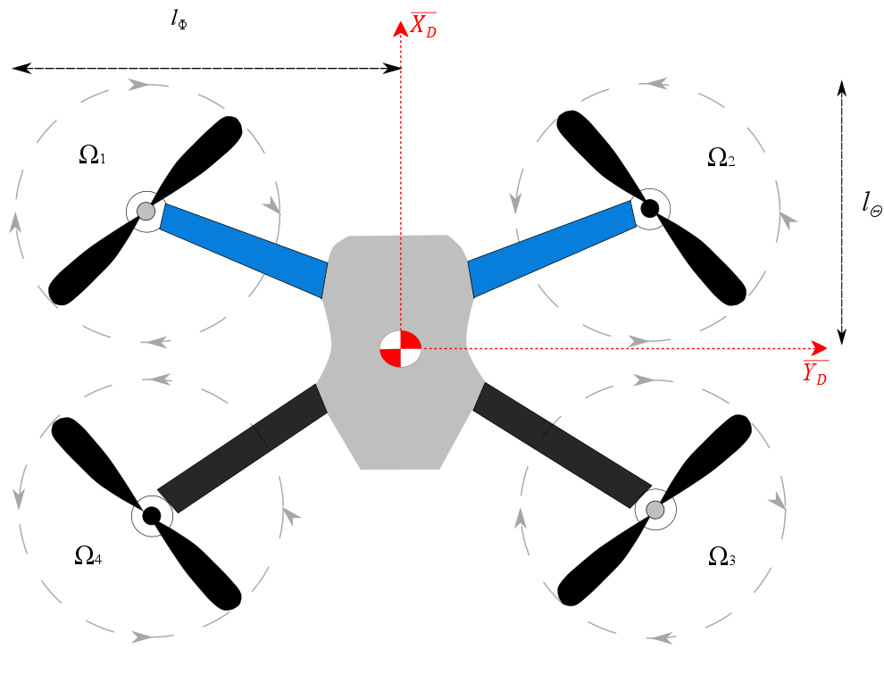

Section 8.4 Aerodynamics
Aerodynamics are typically written using a taylor series expansion about a trim point[[26]][[38]]. That is, the aerodynamic forces are given by
\begin{equation*}
\vec{F} = \vec{F}_0 + \frac{\partial \vec{F}}{\partial \vec{x}}(\vec{x}-\vec{x}_0)
\end{equation*}
where \(\vec{x} = [x,y,z,\phi,\theta,\psi,u,v,w,p,q,r]^T\text{.}\) The partial derivative is thus expanded such that
\begin{equation*}
\frac{\partial \vec{F}}{\partial \vec{x}} = \begin{bmatrix} \frac{\partial \vec{F}}{\partial x} & \frac{\partial \vec{F}}{\partial y} & ... & \frac{\partial \vec{F}}{\partial r} \end{bmatrix}
\end{equation*}
To find all of the partial derivative the forces are first written using a combination of dynamic pressure and coefficients that are functions of geometry and Reynolds number rather than speed, pressure and size. A general lift force can be written using the equation below
\begin{equation*}
L = \frac{1}2\rho {V_{\infty}}^2 S C_L
\end{equation*}
where \(\rho\) is the atmospheric density, \(V_{\infty}\) is the free-stream velocity, S is the planform area of the lifting surface and \(C_L\) is the lift coefficient.
\begin{equation}
V_{\infty} = \sqrt{{u_a}^2 + {v_a}^2 + {w_a}^2}\tag{8.4.1}
\end{equation}
The subscript ’a’ above denotes the velocity of the vehicle plus the atmospheric disturbance.
\begin{equation}
\begin{Bmatrix} u_a \\ v_a \\ w_a \end{Bmatrix} = \begin{Bmatrix} u \\ v \\ w \end{Bmatrix} + {\textbf{T}^T}_{IB} \begin{Bmatrix} V_x \\ V_y \\ V_z \end{Bmatrix}\tag{8.4.2}
\end{equation}
Note that the dynamic pressure is different for vehicles other than aircraft. Note that the general form for drag is also very similar and can be written as
\begin{equation*}
D = \frac{1}2\rho {V_{\infty}}^2 S C_D
\end{equation*}
Specific sections are created below for other flying vehicles. A similar expression can be created for a generic moment such that
\begin{equation*}
M = \frac{1}2\rho {V_{\infty}}^2 S \bar{c} C_M
\end{equation*}
where \(\bar{c}\) is the mean chord of the lifting surface. The dynamic pressure \(q_{\infty} = \frac{1}2\rho {V_{\infty}}^2 S\) can be used to non-dimensionalize the forces, thus \(L/q_{\infty} = C_L\text{.}\) This means that the equation involving partial derivatives can be written as
\begin{equation*}
\frac{\partial \vec{C}_F}{\partial \vec{x}} = \begin{bmatrix} \frac{\partial \vec{C}_F}{\partial x} & \frac{\partial \vec{C}_F}{\partial y} & ... & \frac{\partial \vec{C}_F}{\partial r} \end{bmatrix}
\end{equation*}
If the vector is then expanded to include the components of the vector \(\vec{F}\) the partial derivatives expand to
\begin{equation*}
\frac{\partial \vec{C}_F}{\partial \vec{x}} = \begin{bmatrix} \frac{\partial C_X}{\partial x} & \frac{\partial C_X}{\partial y} & ... & \frac{\partial C_x}{\partial r} \\ \frac{\partial C_Y}{\partial x} & \frac{\partial C_Y}{\partial y} & ... & \frac{\partial C_Y}{\partial r} \\ \frac{\partial C_Z}{\partial x} & \frac{\partial C_Z}{\partial y} & ... & \frac{\partial C_Z}{\partial r} \end{bmatrix}
\end{equation*}
shorthand can be adopted for the forces above such that \(\frac{\partial C_Y}{\partial x} = C_{Yx}\text{.}\) Using this shorthand the equation above can be written as.
\begin{equation*}
\frac{\partial \vec{C}_F}{\partial \vec{x}} = \begin{bmatrix} C_{Xx} & C_{Xy} & ... & C_{Xr} \\ C_{Yx} & C_{Yy} & ... & C_{Yr} \\ C_{Zx} & C_{Zy} & ... & C_{Zr} \end{bmatrix}
\end{equation*}
The coefficients listed above are standard coefficients that all aircraft have. A similar matrix can be formulated for the moments on an aircraft. When system identifying an aircraft all of these coefficients may be determined. However, many of these terms are zero. For example, all coefficients with respect to x y and z are zero. That is, \(C_{Xx} = C_{Yx} = ... C_{Nx} = C_{Xy} = ... C_{Nz} = 0\text{.}\) Other coefficients can be set to zero as well but are not explicitly included in this text.
Subsection 8.4.1 Aircraft Aerodynamics
For aircraft, some further simplifications are made. Some of the coefficients defined above are combined to be written as functions of the angle of attack(\(\alpha\)) and sideslip(\(\beta\)).
\begin{equation}
\alpha = tan^{-1}\left(\frac{w_a} {u_a} \right)\tag{8.4.3}
\end{equation}
\begin{equation}
\beta = sin^{-1}\left(\frac{v_a}{V_{\infty}}\right)\tag{8.4.4}
\end{equation}
Transforming the equations into these formulations gives rise to coefficients such as \(C_{L\alpha}\) which is the change in lift as a function of angle of attack and \(C_{Y\beta}\) which is the change in Y-Force as a function of sideslip. Using all of the coefficients defined above taking into account the change to lift and drag, the body aerodynamic force is calculated using the equation below.
\begin{equation}
\begin{Bmatrix} X_A \\ Y_A \\ Z_A \end{Bmatrix} = \frac{1}2\rho {V_{\infty}}^2 S \begin{Bmatrix} C_Ls_{\alpha}-C_Dc_{\alpha}+C_{x_{\delta_t}} \delta_t \\ C_{y{\beta}}{\beta}+C_{y{\delta}_r}{\delta}_r+C_{yp}\frac{pb}{2V_{\infty}} + C_{yr}\frac{rb}{2V_{\infty}} \\ -C_Lc_{\alpha}-C_Ds_{\alpha} \end{Bmatrix}\tag{8.4.5}
\end{equation}
Where the lift and drag coefficients are:
\begin{equation}
\begin{Bmatrix} C_L \\ C_D \end{Bmatrix} = \begin{Bmatrix} C_{L0} + C_{L\alpha}\alpha + C_{Lq}\frac{q\bar{c}}{2V_{\infty}} + C_{L\delta_e}\delta_e \\ C_{D0} + C_{D\alpha}\alpha^2 \end{Bmatrix}\tag{8.4.6}
\end{equation}
The body aerodynamic moment is also computed using an aerodynamic expansion.
\begin{equation}
\begin{Bmatrix} L_A \\ M_A \\ N_A \end{Bmatrix} = \frac{1}2\rho {V_{\infty}}^2 S \bar{c} \begin{Bmatrix} C_{l\beta}\beta + C_{lp}\frac{pb}{2V_{\infty}} + C_{lr}\frac{rb}{2V_{\infty}} + C_{l\delta_a}{\delta_a} + C_{l\delta_r}{\delta_r} \\ C_{m0} + C_{m\alpha}\alpha + C_{mq}\frac{q\bar{c}}{2V_{\infty}}+ C_{m\delta_e}\delta_e \\ C_{np}\frac{pb}{2V_{\infty}} + C_{n\beta}\beta + C_{nr}\frac{rb}{2V_{\infty}} + C_{n\delta_a}\delta_a + C_{n\delta_r}\delta_r \end{Bmatrix}\tag{8.4.7}
\end{equation}
The aerodynamic coefficients in equations ((8.4.5)), ((8.4.6)) and ((8.4.7)) can be obtained from flight data, aerodynamic modeling and windtunnel tests. Notice that the only coefficients remaining are coefficients from angle of attack, sideslip and angular velocities. Furthermore, the coefficients for angular velocities are also non-dimensionalized by terms such as \(b/(2V_{\infty})\) where \(b\) is the wingspan of the aircraft and \(\bar{c}\) is the mean chord of the aircraft. These terms are introduced to fully non-dimensionalize the coefficients. Notice, as well that four extra terms were also introduced. These will be discussed in more detail in the control section however the four terms are the aileron control surface \(\delta_a\text{,}\) the elevator control surface \(\delta_e\text{,}\) the rudder control surface \(\delta_r\) and the thrust control value \(\delta_t\text{.}\)
Subsection 8.4.2 Projectile Aerodynamics
To fully define the projectile aerodynamics some more assumptions are made about the projectile.
-
The projectile is axially symmetric
-
The aerodynamic forces are not necessarily formulated at the center of mass
-
The projectile has the potential to be spinning rapidly thus interacting with the surrounding atmosphere
For a projectile the dynamic pressure is written as
\begin{equation}
Q = \frac{\pi}{8}\rho V_{\infty}^2d^2 \tag{8.4.8}
\end{equation}
The aerodynamic forces on the projectile are modeled using taylor series ballistic expansions with known coefficients similar to the aircraft model only slightly different assumptions are made given the dynamics of the projectile. The subscripts in the equation below stand for steady and unsteady aerodynamics.
\begin{equation}
\begin{Bmatrix} X_A \\ Y_A\\ Z_A \end{Bmatrix} = \begin{Bmatrix} X_{SA} \\ Y_{SA}\\ Z_{SA} \end{Bmatrix} + \begin{Bmatrix} X_{UA} \\ Y_{UA}\\ Z_{UA} \end{Bmatrix} = Q \begin{Bmatrix} -C_{X_0} - C_{X_2}\frac{v^2+w^2}{V^2}\\ -C_{Y_\beta}\frac{v}{V}\\ -C_{N_\alpha}\frac{w}{V} \end{Bmatrix} + Q \begin{Bmatrix} 0 \\ C_{Y_{p\alpha}}\frac{w}{V}\frac{pd}{2V} \\ C_{Z_{p\alpha}}\frac{v}{V}\frac{pd}{2V}\end{Bmatrix}\tag{8.4.9}
\end{equation}
In this equation, \(Q\) is the dynamic pressure, \(d\) is the aerodynamic reference area, \(C_{X_0}\) is the zero-yaw axial force coefficient, \(C_{X_2}\) is the yaw-squared axial force coefficient, \(C_{N_\alpha}\) is the normal force derivative coefficient, \(C_{Y_{p\alpha}}\) is the Magnus force coefficient, and \(V=\sqrt{u^2+v^2+w^2}\) is the total velocity of the projectile.
The aerodynamic moments acting on the projectile are the pitching, pitch damping, Magnus, and roll damping moments. Pitching and Magnus moments are given by taking the cross product of the normal and Magnus forces given in ((8.4.9)) with the position vector from the center of mass to the center of pressure and location of Magnus force, respectively. The total aerodynamic moments are given in Eqn. ((8.4.10)).
\begin{equation}
\begin{Bmatrix} L_A \\ M_A \\ N_A \end{Bmatrix}= {\bf S}_B(\vec{r}_{CG,COP})\begin{Bmatrix} X_{SA} \\ Y_{SA}\\ Z_{SA} \end{Bmatrix} + {\bf S}_B(\vec{r}_{CG,MCOP})\begin{Bmatrix} X_{UA} \\ Y_{UA}\\ Z_{UA} \end{Bmatrix} + Qd \begin{Bmatrix} C_{l_p} \frac{pd}{2V} \\ C_{m_q} \frac{qd}{2V}\\ C_{n_r} \frac{rd}{2V} \end{Bmatrix}\tag{8.4.10}
\end{equation}
Here, \({\bf S}_B(\vec{r}_{CG,COP})\) is the skew-symmetric operator acting on the position vector from the center of mass to the center of pressure expressed in the projectile body frame. Furthermore, \({\bf S}_B(\vec{r}_{CG,MCOP})\) is the skew-symmetric operator acting on the position vector from the center of mass to the magnus center of pressure expressed in the projectile body frame. Typically the center of mass is defined from the rear of the projectile such that
\begin{equation*}
{\bf C}_B(\vec{r}_{CG}) = \begin{Bmatrix} SL_{CG} \\ BL_{CG} \\ WL_{CG} \end{Bmatrix}
\end{equation*}
Similarly, the center of pressure is defined from the rear of the projectile such that
\begin{equation*}
{\bf C}_B(\vec{r}_{COP}) = \begin{Bmatrix} SL_{COP} \\ BL_{COP} \\ WL_{COP} \end{Bmatrix}
\end{equation*}
The vector \(\vec{r}_{CG,COP}\) is then simply the different between both vectors.
\begin{equation*}
\vec{r}_{CG,COP} = \vec{r}_{COP}-\vec{r}_{CG}
\end{equation*}
The damping coefficient defined in equation ((8.4.10)) include \(C_{l_p}\) which is the roll damping coefficient while \(C_{m_q}\) is the pitch damping coefficient. These coefficients are added which essentially inhibit angular motion of the projectile. In addition, to these coefficients, sometimes magnus coefficients are given as pure moments rather than forces acting at a distance. This can be given in the equation below.
\begin{equation*}
M_{UA} = Qd (-C_{M\alpha}\frac{v}{V} + C_{N_{p\alpha}}\frac{w}{V}\frac{pd}{2V})
\end{equation*}
Where \(C_{M\alpha}\) replaces the moment produced by \(C_{N\alpha}\) and \(C_{N_{p\alpha}}\) replaces the moment produced by \(C_{Y_{p\alpha}}\text{.}\) It is possible to derive an equation between the two different representations as given by the equations below.
\begin{equation*}
\begin{matrix}
C_{M\alpha} = \frac{(SL_{COP}-SL_{CG})C_{N\alpha}}{d} \\
C_{N_{p\alpha}} = \frac{(SL_{MAG}-SL_{CG})C_{Y_{p\alpha}}}{d}
\end{matrix}
\end{equation*}
Subsection 8.4.3 Quadcopter Aerodynamics
The aerodynamic model is based on a standard X-frame quadcopter as shown in the Figure below.

The forces exerted on the quadrotor are the total thrust and aerodynamic drag.
\begin{equation}
\begin{Bmatrix} X_{A}\\Y_{A}\\Z_{A} \end{Bmatrix}= -T\begin{bmatrix} 0 \\ 0 \\ 1 \end{bmatrix} + \begin{Bmatrix} X_{A_{D}} \\ Y_{A_{D}} \\ Z_{A_{D}} \end{Bmatrix}\tag{8.4.11}
\end{equation}
In Eq. ((8.4.11)), \(T\) is the total thrust from the rotors and \(\{X_{A_{D}}, Y_{A_{D}}, Z_{A_{D}}\}^{T}\) is the total drag on the body. The total thrust exerted on the quadcopter is made possible due to the counter-rotating blades and allows for easy maneuverability by deviating the rotor angular velocities. The thrust can be simply defined as the sum of the exerted rotor forces \(f_{i}\) such that
\begin{equation}
T = \sum\limits_{i=1}^4 f_{i} = f_{1}+f_{2}+f_{3}+f_{4}\tag{8.4.12}
\end{equation}
The thrust model of each rotor can then be equated to angular velocity of each rotor (\(\Omega_i\)). Where \(k_t\) is a positive constant.
\begin{equation}
f_{i} = k_{t}{\Omega_{i}}^{2}\tag{8.4.13}
\end{equation}
The total drag caused by the thrusting of the motors is a combination of the induced drag and rotor flapping [[49]]. The induced drag acting on the platform is caused by an imbalance in the thrust produced by advancing and retreating blades. This behavior can be modeled as a linear function of multirotor translational velocity in the quadcopter frame. Additionally, drag due to rotor flapping is caused by rotor flexibility, which is function of advance ratio and dependent on the rotor blades and hub design[[50]]. Thus, the total drag vector on the quadcopter is expressed as
\begin{equation}
\begin{Bmatrix} X_{A_{D}} \\ Y_{A_{D}} \\ Z_{A_{D}} \end{Bmatrix} = -T\begin{Bmatrix} \left(\frac{A_{1c}}{\eta} + d_{x}\right)u - \frac{A_{1s}}{\eta}v \\ \frac{A_{1s}}{\eta}u + \left(\frac{A_{1c}}{\eta} + d_{y}\right)v \\ 0 \end{Bmatrix}\tag{8.4.14}
\end{equation}
where \(d_{x}\text{,}\) \(d_{y}\) are the induced drag coefficients and \(A_{1s}\text{,}\)\(A_{1c}\) are positive constants that describe the rotor flapping response as a function of advance ratio in Eq. ((8.4.15))
\begin{equation}
\begin{split}
\mu = \frac{\sqrt{u^2 + v^2}}{\eta}\\
\eta = {\sum\limits_{i=1}^4 \Omega_{i}R}
\end{split}\tag{8.4.15}
\end{equation}
The quadcopter moment vector will consider additional aerodynamics created by the rotor torque.
\begin{equation}
\{L_A,M_A,N_A\}^{T}= \overrightarrow{\Gamma} + \overrightarrow{\tau_{A}}\tag{8.4.16}
\end{equation}
For Eq. ((8.4.16)), \(\overrightarrow{\Gamma}\) is the gyroscopic moment and \(\overrightarrow{\tau_{A}}\) is the aerodynamic torque vector from the rotors. Note that \(\overrightarrow{\tau_{A}}=\{\tau_{A_{\phi}},\tau_{A_{\theta}},\tau_{A_{\psi}}\}^{T}\) is the expanded form of the torque vector. The gyroscopic moments due to the rotors are defined as
\begin{equation}
\overrightarrow{\Gamma} = I_{r}\begin{bmatrix} p \\ q \\ r \end{bmatrix}\times\begin{bmatrix} 0 \\ 0\\ \Omega_{r} \end{bmatrix} = \begin{bmatrix} I_{r}\Omega_{r}q \\ -I_{r}\Omega_{r}p \\ 0 \end{bmatrix}\tag{8.4.17}
\end{equation}
\begin{equation}
\Omega_{r} = \Omega_{1} - \Omega_{2} + \Omega_{3} - \Omega_{4} \tag{8.4.18}
\end{equation}
where \(I_{r}\) is the moment of inertia about the rotor axis and \(\Omega_{r}\) is the relative rotor speed. In order to rotate the quadcopter to change its Euler angles, the angular velocitiis of each rotor can be altered. Due to the X-Frame design of the quadcopter, this text’s convention is used to enumerate each rotor blade where rotor 1 is the forward-left rotor and the numbers continue in a clockwise fashion. The result is that the Euler angles are changed in a positive direction by noting the inequalities below.
\begin{equation}
\begin{split}
{\phi}^{+}: \Omega_{1}\Omega_{4} \gt \Omega_{2}\Omega_{3}\\
{\theta}^{+}: \Omega_{1}\Omega_{2} \gt \Omega_{3}\Omega_{4}\\
{\psi}^{+}: \Omega_{1}\Omega_{3} \gt \Omega_{2}\Omega_{4}
\end{split}\tag{8.4.19}
\end{equation}
\begin{equation}
\begin{split}
\tau_{A_{\phi}} = l_{\phi}[(f_{1}+f_{4})-(f_{2}+f_{3})]\\
\tau_{A_{\theta}} = l_{\theta}[(f_{1}+f_{2})-(f_{3}+f_{4})]\\
\tau_{A_{\psi}} = \tau_{1}-\tau_{2}+\tau_{3}-\tau_{4}
\end{split}\tag{8.4.20}
\end{equation}
In Eq. ((8.4.20)), \(l_{\phi}\) and \(l_{\psi}\) are the lengths from the rotor axis to the positive platform frame axes for roll and pitch, respectively. Positive yaw torque is achieved by reducing the angular velocity in rotors 2 and 4. The torque (\(\tau_i\)) of each rotor is also modeled as a fucntion of the angular velocity.
\begin{equation}
\tau_{i} = b{\Omega_{i}}^{2}\tag{8.4.21}
\end{equation}
The constant \(b\) in the above equation denote the blade drag factor. The constants are modeled using blade element momentum theory[[51]].
\begin{equation}
k_{t} = C_{T}\frac{4\rho {R}^{4}}{{\pi}^{2}}\tag{8.4.22}
\end{equation}
\begin{equation}
b = C_{\tau}\frac{4\rho {R}^{5}}{{\pi}^{3}}\tag{8.4.23}
\end{equation}
Subsection 8.4.4 Spacecraft Aerodynamics
The aerodynamic force is computed using aerodynamic coefficients and dynamic pressure where \(\vec{V}\) is the velocity of the satellite and \(V\) is the magnitude of the velocity vector. Furthermore, \(S\) is the surface area of the satellite and \(C_D\) is the drag coefficient. The torque on the satellite is then given by the cross product between the aerodynamic force and a distance vector representing the distance between the center of mass and the center of pressure \(\vec{r}_{CP-CG}\text{.}\)
\begin{equation*}
\vec{F}_A = \frac{1}{2}\rho V\vec{V}S C_D
\end{equation*}
\begin{equation*}
\vec{M}_A = -{\bf S}\left(\vec{F}_A\right)\vec{r}_{CP-CG}
\end{equation*}